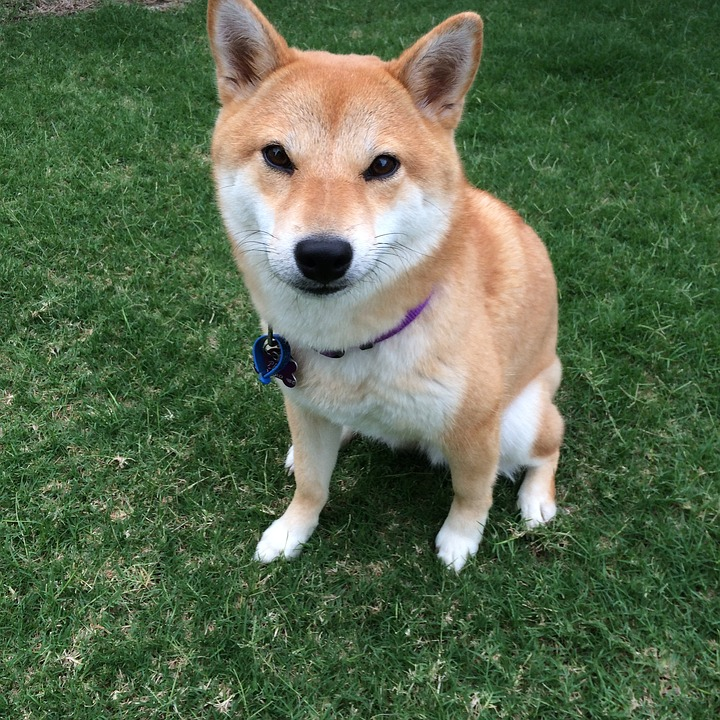

Shiva: My Favorite Dog

This is a photo of the Japanese dog. This is Japanese old school dog, many people raise this dog. And it is also really quiet, unless someone harm its owner.
This is a photo of the Japanese dog. This is Japanese old school dog, many people raise this dog. And it is also really quiet, unless someone harm its owner.